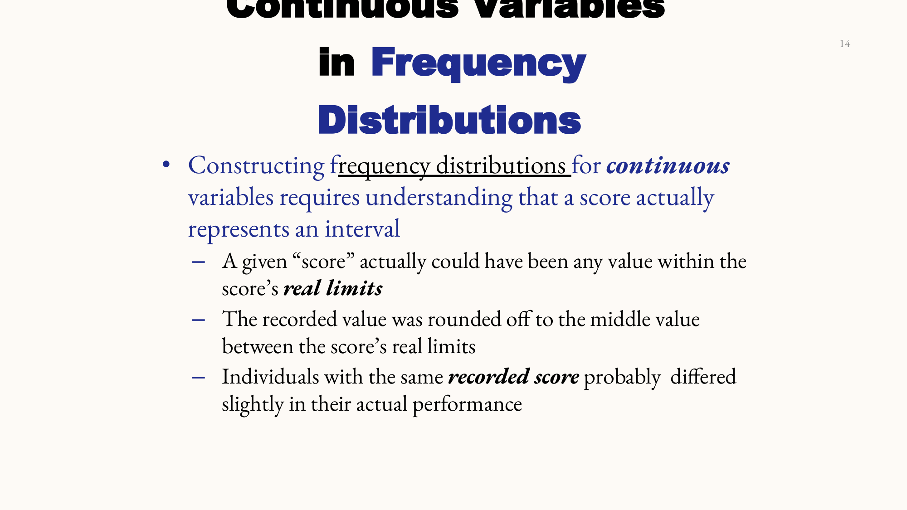
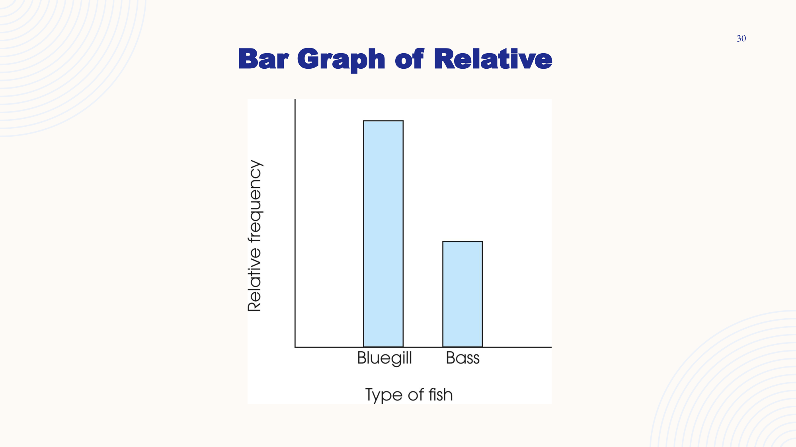

Penyusunan tabel frekuensi, aturan interval berkelompok, grafik histogram/poligon/bar graph, serta mengidentifikasi bentuk distribusi simetris dan skewed.
1. Tabel Distribusi Frekuensi & Proporsi
Distribusi Frekuensi (Frequency Distribution) adalah susunan terorganisir yang menampilkan jumlah individu dalam setiap kategori pada skala pengukuran.
Elemen Utama Tabel Frekuensi:
Skor ($X$): Nilai yang disusun berurutan dari tertinggi ke terendah.
Frekuensi ($f$): Jumlah individu yang memperoleh skor tersebut ($\sum f = N$).
Proporsi ($p$): Bagian skor dari total populasi: $p = \frac{f}{N}$.
📷 Diagram Asli Slide: Grafik Histogram dengan Batang Saling Menempel Pada Batas Nyata Real Limits

📷 Diagram Asli Slide: Poligon Frekuensi Menggunakan Titik Nilai Tengah (*Midpoint*) yang Dihubungkan Garis
Jenis Grafik
Skala Pengukuran Data
Ciri Visual Kunci
Histogram
Interval atau Rasio (Kontinu)
Batang-batang SALING MENEMPEL tanpa celah. Batas antar batang terletak tepat pada Batas Nyata (Real Limits).
Poligon Frekuensi
Interval atau Rasio (Kontinu)
Titik diletakkan di Nilai Tengah (Midpoint) interval, dihubungkan garis lurus.
Bar Graph (Diagram Batang)
Nominal atau Ordinal (Diskrit)
Terdapat RUANG KOSONG / CELAH (SPACES) antar batang untuk menegaskan kategorinya terpisah secara diskrit.
3. Bentuk-Bentuk Distribusi (Distribution Shapes)

📷 Diagram Asli Slide: Positively Skewed (Ekor Kanan) vs Negatively Skewed (Ekor Kiri)
Positively Skewed (Mencong Positif):
Mayoritas skor berkumpul di sisi kiri (nilai-nilai rendah), sedangkan ekor grafik memanjang ke arah KANAN (nilai positif tinggi).
Negatively Skewed (Mencong Negatif):
Mayoritas skor berkumpul di sisi kanan (nilai-nilai tinggi), sedangkan ekor grafik memanjang ke arah KIRI (nilai negatif rendah).
💡 CARA CEPAAT MENGHAFAL (MNEMONICS)
🧠 Trik Hafal Positively vs Negatively Skewed
Arah Ekor (Tail) menentukan nama Skewness!
Ekor memanjang ke KANAN (Nilai Tinggi / Positif) $\to$ **Positively Skewed**.
Ekor memanjang ke KIRI (Nilai Rendah / Negatif) $\to$ **Negatively Skewed**.
✍️ LATIHAN SOAL INTERAKTIF (Pilihan Ganda & Essay)
Bagian I: Soal Pilihan Ganda (PG)
1. Pada grafik manakah batang-batang diwajibkan digambar menempel tanpa celah?
2. Suatu distribusi memiliki ekor grafik yang memanjang ke arah KANAN. Bentuk distribusi ini dinamakan...
Bagian II: Soal Essay
Soal Essay: Gambarkan secara deskriptif karakteristik grafik Positively Skewed beserta contoh fenomena dunia nyata yang menghasilkannya!